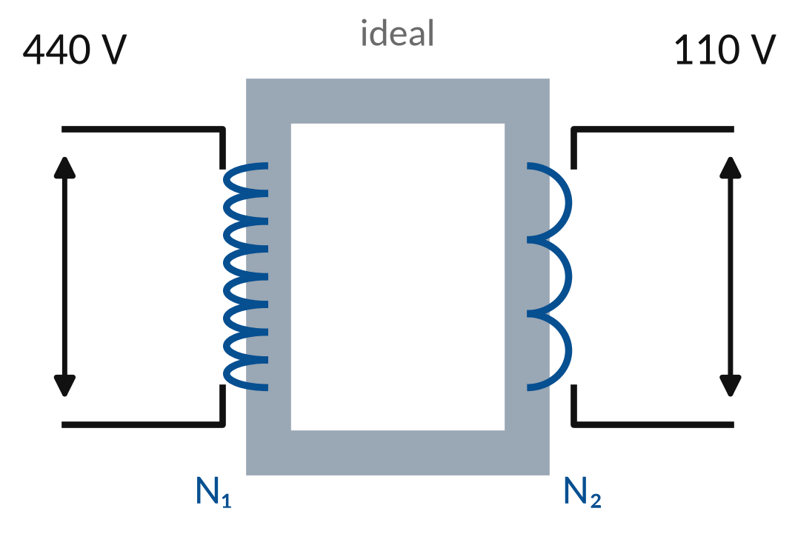
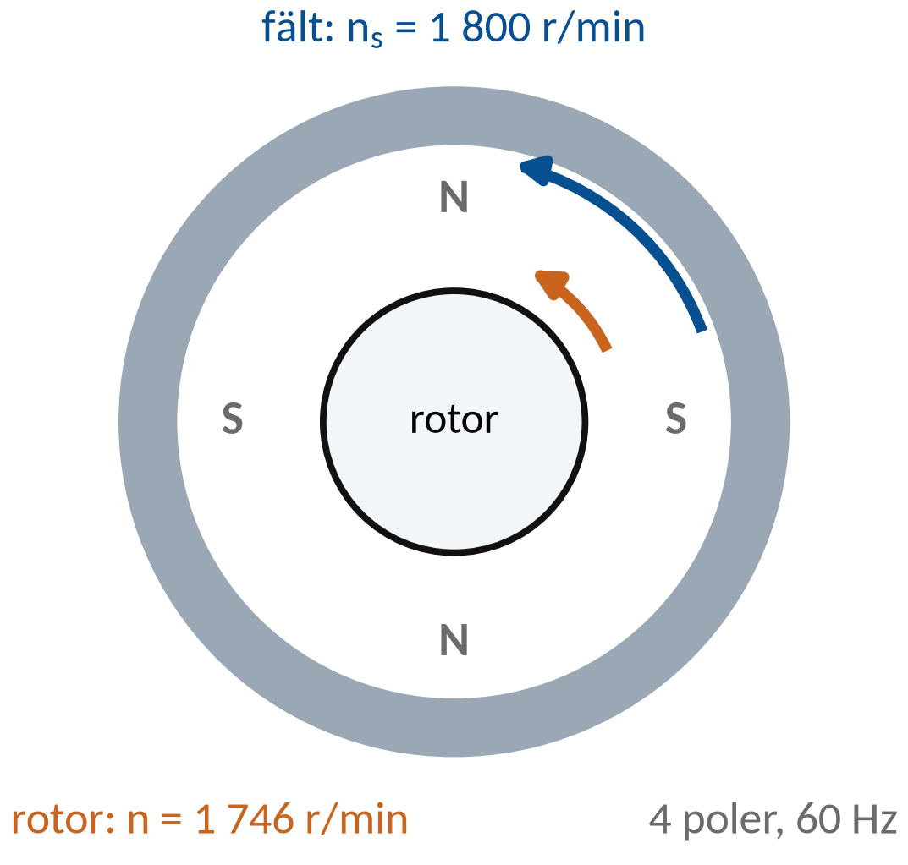
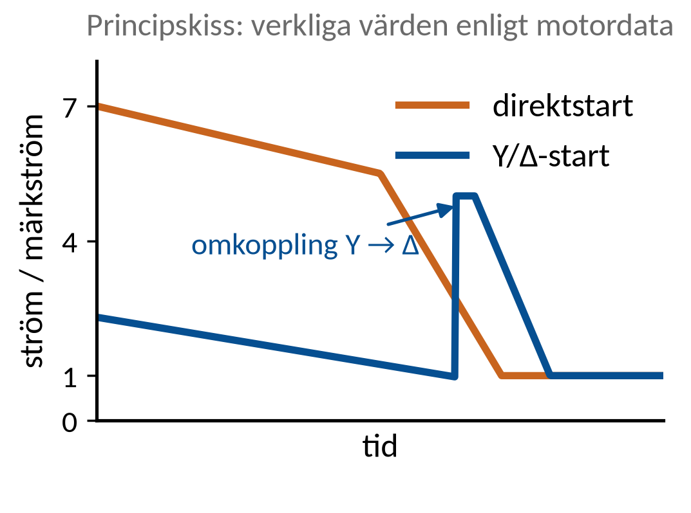
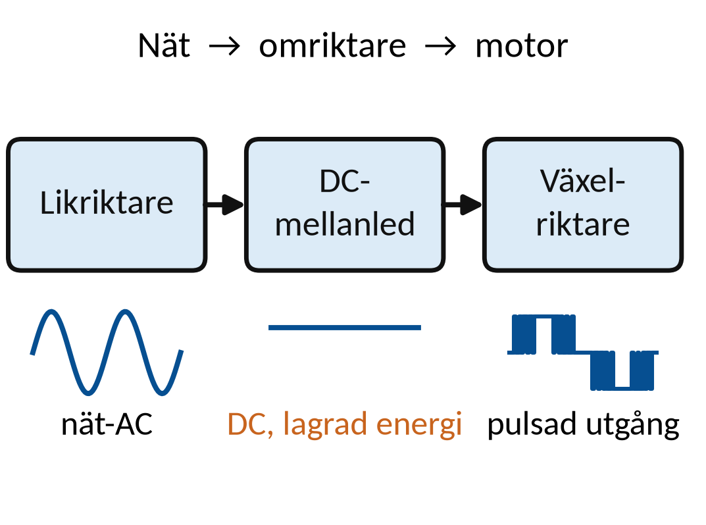
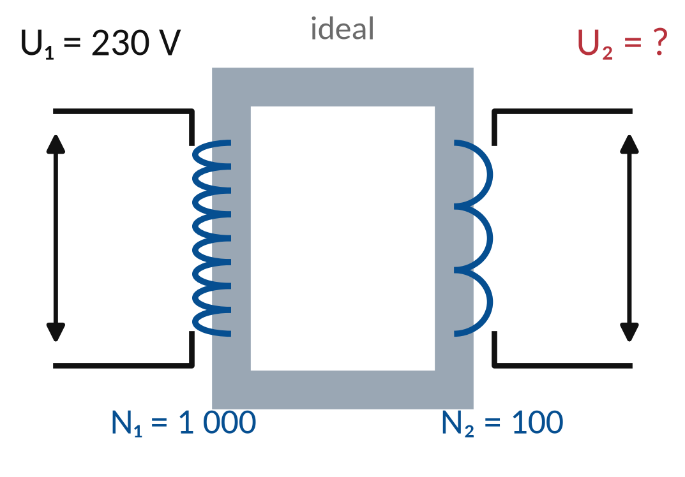
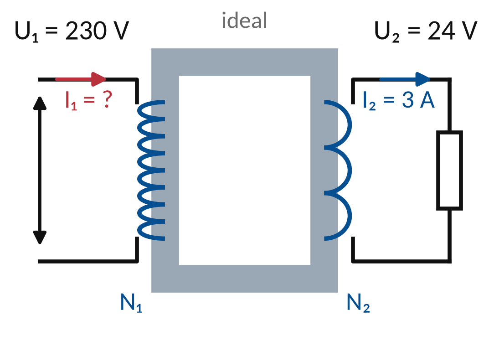

Vecka 43 · Del 2 av 3
Del 2: Transformatorer och motorer
1 Översikt
Det här ska du kunna
- Använda transformatorns omsättning och motorns varvtalssamband.
- Beskriva start och varvtalsreglering på funktionsnivå.
Fundera först: Varför går en fyrpolig asynkronmotor något långsammare än fältets synkrona varvtal? Svaret finns i teorin nedan.
Så gör du
- Läs teorin (7 korta avsnitt). Titta på figuren till varje avsnitt.
- Följ exemplen med papper och räknare, steg för steg.
- Gör övningarna 2.1–2.10. Fastnar du: Ledtråd 1 visar vilket samband du behöver och var i teorin det förklaras. Ledtråd 2 visar hur du börjar och Ledtråd 3 exemplet som räknar samma sorts uppgift med andra tal. Öppna facit när du har ett eget svar.
- Lämna in veckans uppgifter: Veckans inlämning.
Så skriver du en lösning som går att följa
1. Givet och sökt
Skriv av värden, enheter och vad du ska bestämma.
2. Samband och villkor
Välj formel eller princip. Kontrollera koppling, driftfall och antaganden.
3. Uträkning och kontroll
Omvandla enheter, sätt in värden och tolka resultatet.
I resonemangsfall: koppla observation till en motiverad slutsats.
Lärarens presentation · PDF · Räknarhjälp · Formelblad
Förkortningar och beteckningar i den här delen (7)
- Hz
- hertz. Enheten för frekvens: 1 Hz är en period per sekund. Elnätet ombord är ofta 50 eller 60 Hz. 1 kHz = 1 000 Hz.
- VA, kVA
- voltampere. Enheten för skenbar effekt S. 1 kVA = 1 000 VA.
- RMS
- effektivvärde (engelska: root mean square, som betyder kvadratiskt medelvärde). Det värde som ger samma värme i en resistor som en lika stor likspänning. När en spänning anges utan annat, till exempel 230 V eller 12,00 V RMS, är det effektivvärdet. Multimetern visar effektivvärdet. Behöver du skilja effektivvärdet från andra värden skrivs det URMS (eller IRMS för ström). Enhet: V eller A.
- PF
- effektfaktor (engelska: power factor). Hur stor del av den skenbara effekten som är aktiv: PF = P/S, ett tal mellan 0 och 1. Lägre PF ger större ström för samma aktiva effekt.
- DC
- likström, likspänning (engelska: direct current). Ström eller spänning med samma riktning hela tiden, till exempel från ett batteri. På multimetern V⎓ eller DC.
- AC
- växelström, växelspänning (engelska: alternating current). Ström eller spänning som byter riktning hela tiden, till exempel 230 V i ett eluttag. På multimetern står läget ofta som V~ eller AC.
- f
- frekvens. Antal hela perioder per sekund. Enhet: Hz.
2 Teori
Läs avsnitten i ordning. Övningarna hänvisar hit.
1. Transformator och roterande maskin
Transformatorns N betyder antal lindningsvarv.
Motorns n betyder varvtal i r/min. nₛ gäller magnetfältet.
p är antalet poler i formeln nₛ = 120f/p.
s beskriver eftersläpning. η beskriver förhållandet mellan uteffekt och inmatning.
2. Transformatorns omsättning
En växlande magnetisk koppling överför energi mellan lindningar.
Den ideala modellen försummar förluster.

U₁/U₂ = N₁/N₂ U₁I₁ = U₂I₂
440 V till 110 V ger omsättningen 4:1.
2 A på sekundären motsvarar idealt 0,50 A på primären.
3. Asynkronmotorns roterande fält
Statorns trefasströmmar skapar ett roterande magnetfält.
Fältets hastighet bestäms av frekvens och antal poler.
nₛ = 120f/p
Ombord: 60 Hz och fyra poler ger nₛ = 1 800 r/min.
Här är p antalet poler, inte antalet polpar.
4. Eftersläpning
I motordrift roterar asynkronmotorns rotor långsammare än fältet.
Skillnaden behövs för induktion och moment i den vanliga modellen.

s = (nₛ − n)/nₛ
nₛ = 1 800 och n = 1 746 r/min ger s = 0,03 = 3 %.
Eftersläpningen varierar med belastningen.
5. Startutrustning
Direktstart kopplar motorn till matningen genom en startapparat.
Y/Δ-start förutsätter en motor och last som passar metoden.

Märkning, startström och lastmoment avgör
Ombord: en 440/760 V Δ/Y-motor kan vara kandidat vid 440 V.
Y-start minskar också tillgängligt startmoment.
6. Frekvensomriktarens delar
En vanlig omriktare har likriktare, DC-mellanled och växelriktare.
Utgångens frekvens och spänning styr motorns drift.

Nät-AC, mellanleds-DC, reglerad motorutgång
Utspänningen är ofta pulsformad. Mätmetod och instrument måste vara avsedda för omriktardrift.
7. Felsökning i motordriften
Skilj kommando, matning, skyddstillstånd och mekanisk last.
Ett larm är information som ska tolkas tillsammans med driftdata.
Återställning kräver klarlagd orsak
Vid 440 V nät ligger mellanledet på ca 620 V DC och kan vara laddat efter frånkoppling.
Följ omriktarens säkerhetsanvisning: frånskilj alla energikällor, följ väntetiden och verifiera samtliga föreskrivna mätpunkter. Enbart DC+–DC− räcker inte.
3 Exempel
Följ exemplet steg för steg med papper och räknare. Övningarna använder samma metod med andra tal.
Exempel: ideal transformator
Ideal styrtransformator till en kontaktors manöverkrets: U₁ = 230 V, N₁ = 460, N₂ = 48 varv. I₂ = 2 A.
U₂ = U₁N₂/N₁ I₁ = U₂I₂/U₁
- U₂ = 230 · 48/460 = 24 V.
- Sekundär skenbar effekt S₂ = 24 · 2 = 48 VA.
- I₁ = 48/230 ≈ 0,21 A.
Kontroll: 230 · 0,21 ≈ 24 · 2 = 48 VA. Modellen försummar magnetiseringsström och förluster.
Exempel: varvtal och eftersläpning
En åttapolig motor matas med 60 Hz. Rotorn går med 873 r/min.
nₛ = 120f/p s% = 100(nₛ − n)/nₛ
- nₛ = 120 · 60/8 = 900 r/min.
- Skillnad = 900 − 873 = 27 r/min.
- s% = 100 · 27/900 = 3 %.
Rotorn går långsammare än fältet vid den angivna motordriften. p är åtta poler, inte fyra polpar.
4 Övningar
Räkna på papper. Bocka av en övning när du har kontrollerat ditt svar mot facit. Avbockningen sparas i den här webbläsaren.
Övning 2.1: Omsättning
En ideal enfastransformator har N1 = 1 000 varv och N2 = 100 varv. U1 = 230 V. Bestäm U2.
Givet: Ideal enfastransformator. N1 = 1 000, N2 = 100 och U1 = 230 V RMS.

Ledtråd 1: vilket samband?
Använd U2 = U1 · N2/N1. Läs Teori 2: Transformatorns omsättning.
Ledtråd 2: hur börjar jag?
N1 och N2 är antalet varv i lindningarna; 1 är primärsidan och 2 sekundärsidan. Räkna ut förhållandet N2/N1 och multiplicera primärspänningen med det.
Ledtråd 3: steg för steg med andra tal
1) Omsättningen är kvoten mellan varvtalen: N2/N1. 2) Multiplicera primärspänningen med den kvoten. Exempel ombord: 440 V på primärsidan, N1 = 500 och N2 = 125 ger U2 = 440 · 125/500 = 110 V. Rimlighet: färre varv på sekundärsidan ger lägre spänning.
Facit
U2 = 230 · 100/1 000 = 23 V.
Svar: U2 ≈ 23,0 V
Övning 2.2: Transformatorström
En ideal transformator matar en resistiv last med 24 V och 3 A. Primärspänningen är 230 V. Bestäm effekten och primärströmmen.
Givet: Ideal enfastransformator med resistiv last, PF = 1. U2 = 24 V, I2 = 3 A och U1 = 230 V. Förluster försummas.

Ledtråd 1: vilket samband?
Använd U1 · I1 = U2 · I2; I1 = U2 · I2/U1. Läs Teori 1: Transformator och roterande maskin.
Ledtråd 2: hur börjar jag?
Spänning gånger ström ger skenbar effekt i VA, och för en resistiv last är det också den aktiva effekten i W. Räkna ut effekten på sekundärsidan och dela med primärspänningen. Håll isär primär- och sekundärsidan.
Ledtråd 3: steg för steg med andra tal
1) En ideal transformator har samma effekt in som ut: U1 · I1 = U2 · I2. 2) Räkna först effekten på sekundärsidan. 3) Dela med primärspänningen. Exempel: 12 V och 5 A på sekundärsidan ger P = 60 W, och med 230 V på primärsidan blir I1 = 60/230 ≈ 0,26 A. Rimlighet: högre spänning ger lägre ström på primärsidan.
Facit
I1 = 24 · 3/230 ≈ 0,31 A.
Svar: I1 ≈ 0,313 A
Övning 2.3: Synkront varvtal
Beräkna ns för en fyrpolig motor vid 50 Hz.
Givet: Fyrpolig motor: p = 4. Frekvensen f = 50 Hz. I den här formeln är p antalet poler, inte polpar.
Ledtråd 1: vilket samband?
Använd ns = 120f/p. Läs Teori 1: Transformator och roterande maskin.
Ledtråd 2: hur börjar jag?
ns är magnetfältets varvtal i r/min. Multiplicera frekvensen med 120 och dela med antalet poler.
Ledtråd 3: steg för steg med andra tal
1) Kontrollera att p är antalet poler, inte polpar. 2) Sätt in i ns = 120 · f/p. Exempel ombord: 60 Hz och fyra poler ger ns = 120 · 60/4 = 1 800 r/min. Rimlighet: fler poler ger lägre varvtal.
Facit
ns = 120 · 50/4 = 1 500 r/min.
Svar: ns ≈ 1500,0 r/min
Övning 2.4: Sex poler
Vilket synkront varvtal ger sex poler och 50 Hz?
Givet: p = 6 poler och f = 50 Hz.
Ledtråd 1: vilket samband?
Använd ns = 120f/p. Läs Teori 1: Transformator och roterande maskin.
Ledtråd 2: hur börjar jag?
Fler poler ger lägre varvtal vid samma frekvens. Sätt in p = 6. Svaret blir i r/min, eftersom formeln redan räknar om till minuter.
Ledtråd 3: steg för steg med andra tal
1) Använd ns = 120 · f/p med p = antal poler. 2) Räkna i ordning: 120 · f först, dela sedan med p. Exempel ombord: 60 Hz och åtta poler ger ns = 120 · 60/8 = 900 r/min.
Facit
ns = 120 · 50/6 = 1 000 r/min.
Svar: ns ≈ 1000,0 r/min
Övning 2.5: Eftersläpning
En fyrpolig 50 Hz-motor går med 1 440 r/min. Beräkna eftersläpningen i procent.
Givet: f = 50 Hz, p = 4 och n = 1 440 r/min. Motorn går som motor, alltså inte som generator.
Ledtråd 1: vilket samband?
Använd ns = 120f/p och s% = 100 · (ns − n)/ns. Läs Teori 1: Transformator och roterande maskin.
Ledtråd 2: hur börjar jag?
n är rotorns verkliga varvtal. Räkna först ut ns, sedan skillnaden ns − n som andel av ns, och gör om till procent.
Ledtråd 3: steg för steg med andra tal
1) Räkna det synkrona varvtalet ns = 120 · f/p. 2) Skillnaden ns − n är eftersläpningen i r/min. 3) Dela med ns och multiplicera med 100. Exempel ombord: en sexpolig motor på 60 Hz som går med 1 140 r/min har ns = 1 200 r/min och s = 100 · 60/1 200 = 5,0 %. Rimlighet: en motor går alltid något långsammare än fältet.
Facit
ns = 1 500 r/min. s = 100 · 60/1 500 = 4,0 %.
Svar: s ≈ 4,0 %
Övning 2.6: Ändrad frekvens
En fyrpolig motor matas med 40 Hz. Beräkna fältets synkrona varvtal.
Givet: Fyra poler och frekvensen 40 Hz. Uppgiften gäller bara fältets varvtal.
Ledtråd 1: vilket samband?
Använd ns = 120f/p. Läs Teori 3: Asynkronmotorns roterande fält.
Ledtråd 2: hur börjar jag?
Formeln ger fältets varvtal. För rotorns varvtal skulle du också behöva eftersläpningen. Sätt in 40 Hz och fyra poler.
Ledtråd 3: steg för steg med andra tal
1) Sätt in den nya frekvensen i ns = 120 · f/p. Polantalet är detsamma. Exempel: en sexpolig motor som matas med 30 Hz från en frekvensomriktare får ns = 120 · 30/6 = 600 r/min. Rimlighet: lägre frekvens ger lägre varvtal i samma proportion.
Facit
ns = 120 · 40/4 = 1 200 r/min.
Svar: ns ≈ 1200,0 r/min
Övning 2.7: Rätt motor för Δ-drift
Nätet är 400 V. Motor A är Δ/Y 230/400 V, motor B Δ/Y 400/690 V. Vilken av motorerna ska kopplas i Δ på det här nätet?
Givet: Nät 400 V. Motor A: Δ/Y 230/400 V. Motor B: Δ/Y 400/690 V.
Ledtråd 1: vilken princip?
Utgå från Δ-koppling ger Ugren = UL. Läs Teori 2: Transformatorns omsättning.
Ledtråd 2: hur börjar jag?
Märkningen Δ/Y anger nätspänningen för de två kopplingarna. Jämför 400 V med motorernas Δ-spänning. Frågan gäller normal drift, inte hur motorn ska startas.
Ledtråd 3: steg för steg
1) För varje motor: vilken spänning hör till Δ-kopplingen? 2) Vilken av dem är lika med nätets spänning? 3) Vilken koppling blir det för den andra motorn? Annat fall: ombord med 440 V och en motor märkt Δ/Y 440/760 V.
Facit
Motor B, Δ/Y 400/690 V. Motor A ska kopplas i Y på 400 V.
Övning 2.8: Omriktarens funktioner
Ange ordningen för likriktare, växelriktare och DC-mellanled från nät till motor.
Givet: En vanlig frekvensomriktare med dessa tre delar.
Ledtråd 1: vilken princip?
Utgå från Följ energin från nät till motor. Läs Teori 7: Felsökning i motordriften.
Ledtråd 2: hur börjar jag?
Varje del ändrar energins form. En av delarna lagrar energi mellan de två andra. Följ energins väg från nät till motor och placera delarna i funktionell ordning.
Ledtråd 3: steg för steg
1) Vilken form har elen från nätet: AC eller DC? 2) Vilken form behöver mellanledet ha för att kunna lagra energi? 3) Vad behövs sist för att få variabel frekvens till motorn? Skriv delarna i den ordning energin passerar.
Facit
Likriktare, DC-mellanled, växelriktare.
Övning 2.9: Motorförluster
En motor tar 4,0 kW elektriskt och ger 3,4 kW på axeln. Bestäm verkningsgraden och förlusten.
Givet: Pin = 4,0 kW och Paxel = 3,4 kW gäller vid samma belastning.
Ledtråd 1: vilket samband?
Använd η = Paxel/Pin; Pförlust = Pin − Paxel. Läs Teori 5: Startutrustning.
Ledtråd 2: hur börjar jag?
Räkna i samma enhet hela tiden. Dela axeleffekten med den tillförda effekten och multiplicera med 100 för procent. Räkna förlusten för sig.
Ledtråd 3: steg för steg med andra tal
1) Verkningsgraden är det nyttiga delat med det tillförda: η = Paxel/Pin. 2) Förlusten är skillnaden: Pin − Paxel. Exempel: en fläktmotor tar 7,5 kW och ger 6,6 kW på axeln: η = 6,6/7,5 = 0,88 = 88 % och förlusten 0,9 kW. Rimlighet: η ska ligga under 100 %.
Facit
η = 3,4/4,0 = 0,85 = 85 %. Förlust 0,6 kW.
Svar: η ≈ 85,0 % · förlust ≈ 0,6 kW
Övning 2.10: Larm efter överlast
Överlastskyddet för en motor löser ut gång på gång. Föreslå två olika möjliga orsaker och vilken information som kan skilja dem åt.
Givet: Skyddet löser ut gång på gång. Det finns inga mätvärden som visar orsaken än.
Ledtråd 1: vilken princip?
Utgå från Överlastlarm är ett symtom som kräver orsakssökning. Läs Teori 7: Felsökning i motordriften.
Ledtråd 2: hur börjar jag?
Den mekaniska lasten, matningen och skyddets inställning påverkar motorströmmen. Formulera två olika hypoteser och ange vilka data som kan skilja dem åt, till exempel fasströmmarna och hur lasten varierar.
Ledtråd 3: steg för steg
1) Tänk på lasten: kan pumpen gå tyngre än den ska? 2) Tänk på matningen: fattas en fas, eller är spänningen obalanserad? 3) Tänk på skyddet: är inställningen rätt? 4) Välj två och skriv vilken mätning som skiljer dem, till exempel strömmen i varje fas.
Facit
Exempel: 1) mekanisk överlast eller tröghet i pumpen, 2) obalans eller fasbortfall i matningen. Fasströmmar, spänning per fas och belastningsförlopp skiljer dem. Kontrollera också skyddets inställning.
Klart med delen?
Vilken del av en omriktare kan lagra energi efter att matningen brutits?
Förbered en funktionsbeskrivning av motorstartaren. Skilj elektrisk inmatning, skyddsfunktion och mekanisk last.
5 Labben
Labben kommer sist i veckan, när du har gått igenom del 1–3. Du använder samma metod som i övningarna: räkna först, läs av, jämför och förklara.
Veckans labbar Veckans inlämning
Källor och fortsatt läsning
Studieplanen YH03151, 18 september 2026 Sjöskolans kursmaterial och originalmall
ABB: asynkronmotor och frekvensomriktare
ABB: motorns märkning och Y/Δ
Schneider Electric: skenbar effekt